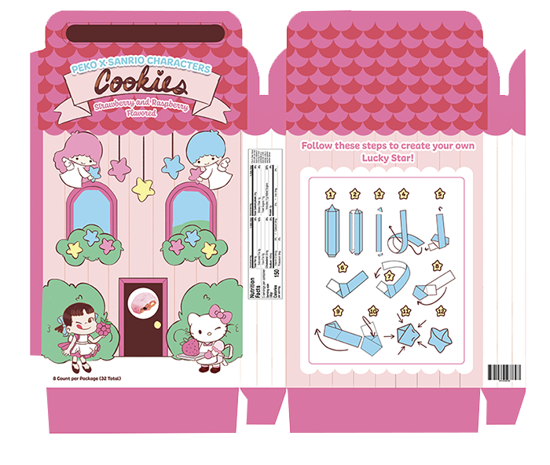

sanrio redesign
Course: Graphic Design 2
Illustrator, Photoshop, Procreate
This is a flat package design created as part of a challenge to redesign an existing product while keeping brand identity consistent. It is hand illustrated.
The cookies would be stacked in four inner tubes, which could be made into origami stars once finished.